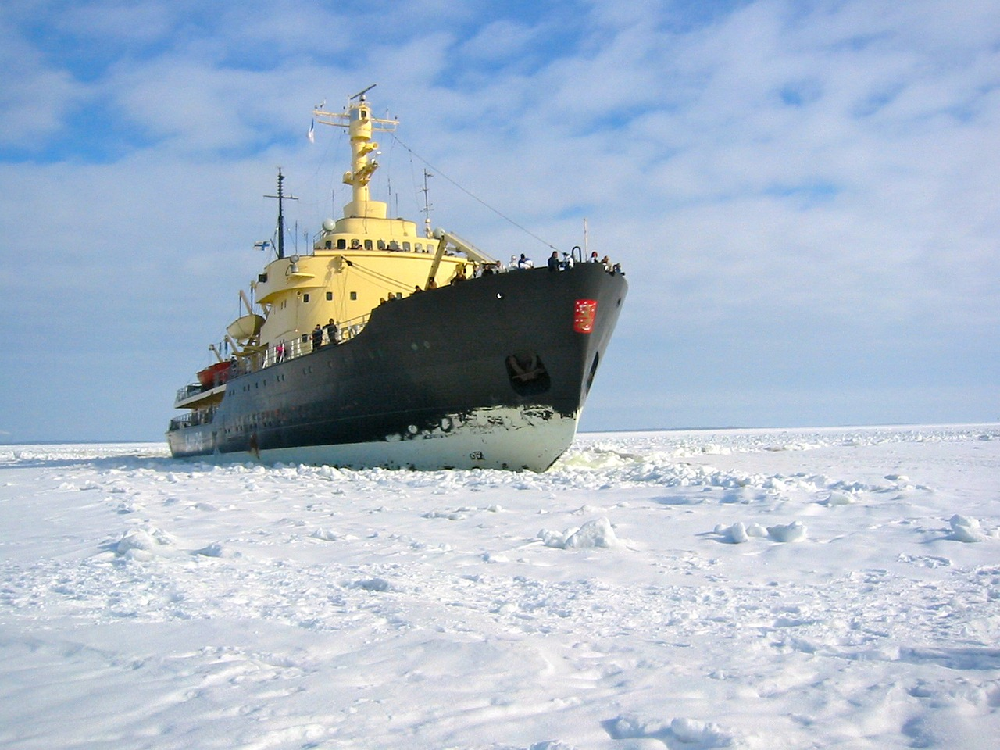

Russian Odyssey: Epic Adventures Awaiting the Adventurous Soul
Mountain Adventures in Russia
For outdoor enthusiasts, Russia provides a wide range of exhilarating mountain experiences due to its large and diverse terrain. Adventurers can experience the beautiful alpine landscape, difficult climbs, and rustic terrain of Siberia's Altai Range, as well as the towering peaks of the Caucasus Mountains. Russia's mountain wildness is truly breathtaking. The following information will help you organize your mountain trip in Russia:
Mountaineering in the Caucasus Mountains

Description: The Black Sea to the Caspian Sea, the Caucasus Mountains are Russia's top mountain climbing destination, with a variety of peaks and routes to suit climbers of all skill levels.
Highlights: Summit Mount Elbrus, at 5,642 meters (18,510 feet) above sea level, is Europe's highest summit. Enjoy the exhilaration of ascending glaciated summits like Dombay-Ulgen and Mount Kazbek. Discover isolated valleys, alpine meadows, and historic settlements tucked away among massive peaks.
Resources: For information about guided trips, renting equipment, and safety precautions, get in touch with the area's mountaineering associations, tour companies, and qualified guides. When preparing for a climb in the Caucasus Mountains, the Russian Geographical Society and the Russian Mountaineering Federation are invaluable tools.
Hiking in the Altai Mountains

Description: The Altai Mountains, found in southern Siberia, are a great place to go hiking and trekking because of its untainted wilderness, craggy vistas, and varied ecosystems.
Highlights: Explore Altai Tavan Bogd National Park's paths, where you may camp next to glistening lakes, climb to the foot of imposing peaks, and see ancient petroglyphs. Explore the Chuya Highway, a picturesque path that offers sweeping vistas of the surrounding countryside as it goes through alpine meadows, river basins, and mountain passes.
Resources: Arrange your hiking trip with regional tour companies that provide homestay lodging, guided treks, and cultural excursions throughout the Altai region. Information about hiking routes, trail conditions, and conservation efforts in the Altai Mountains can be found through the Great Altai Trail Association.
Rock Climbing in the Ural Mountains
Description: Located between Europe and Asia, the Ural Mountains provide excellent chances for rock climbing due to its rocky cliffs, granite spires, and sheer walls.
Highlights: Climb at well-known rock climbing locations like Taganay National Park, where you may put your skills to the test on difficult routes that range from sport climbs with single pitches to multi-pitch traditional climbs. Discover the Beloretsky Rock Pillars, a collection of limestone structures with distinctive features and breathtaking scenery that draw climbers from all over the world.
Resources: To find out about climbing routes, access concerns, and safety considerations in the Ural Mountains, get in touch with the local climbing groups, outdoor enthusiasts, and experienced climbers. For rock climbing expeditions in the area, the Russian Mountaineering Federation and the Ural Climbing Club can offer direction and assistance.
Ski Mountaineering in Kamchatka

Description: Situated in the Far East of Russia, Kamchatka is a country of untamed beauty and remarkable volcanic landscapes that present unrivaled chances for ski mountaineering experiences.
Highlights: Take a ski excursion through the Kamchatka Peninsula's volcanic peaks, where you may discover isolated valleys covered in pure powder, ski down steep couloirs, and ascend snow-covered slopes. Climb famous mountains like the Koryaksky, Avachinsky, and Mutnovsky volcanoes to get sweeping views of the surrounding landscape.
Resources: Plan ski mountaineering trips in Petropavlovsk-Kamchatsky with regional outfitters and guides, and make sure you have the right equipment for backcountry skiing, avalanche safety gear, and outdoor survival for far-off adventures. Support and knowledge for ski mountaineering in the area are provided by the Kamchatka Mountaineering Club and the Kamchatka Ski Mountaineering Association.
Wilderness Expeditions in Russia
Russia provides travelers looking to explore far-flung and unexplored regions with chances that are unmatched due to its enormous and diversified wilderness areas. Wilderness trips in Russia offer life-changing experiences and a close bond with the natural world, from the pure woods of Siberia to the Arctic tundra of the Far North. The following information will help you organize your wilderness trip in Russia:
Kayaking and Canoeing on Remote Rivers:

Description: Paddlers have the opportunity to experience natural immersion and unspoiled landscape exploration through Russia's network of untamed and picturesque rivers that meander through pure wilderness.
Highlights: Set off on a multi-day canoeing or kayaking adventure on the Kamchatka Peninsula, where you'll be able to navigate through fjords formed by volcanic eruptions, pristine rivers brimming with salmon, and mountainous coasts. Discover the marshes, bird sanctuaries, and habitats of Arctic species by canoeing across the Lena River Delta's waters in the Russian Arctic.
Resources: Work with local outfitters, eco-tour operators, or wilderness guides who specialize in river adventures to plan your kayaking or canoeing adventure. For information on river routes, access locations, and safety issues, contact the Russian Geographical Society and the Russian Paddling Federation.
Backpacking and Camping in Remote Wilderness Areas:

Description: Backpacking and camping excursions abound in Russia's vast and remote wilderness areas, which provide travelers with the chance to discover unexplored landscapes, come across wildlife, and feel alone in nature.
Highlights: Trek through old-growth woods, alpine meadows, and pristine lakeshores on the Sayan Mountains' paths in southern Siberia. You may get lucky and see rare animals like Siberian tigers, brown bears, and snow leopards. Discover the isolated taiga forests of the Russian Far East, where you may set up camp next to rivers, go salmon fishing, and see wolves, sables, and elk in their native environments.
Resources: For information on backpacking routes, camping laws, and safety advice, check with the local park authorities, nature reserves, or wilderness guides. For advice on wilderness exploration and protection, consult the Russian National Park Service and the Ministry of Natural Resources and Environment in Russia.
Off-Road Expeditions in Remote Regions:

Description: Off-road enthusiasts can explore remote and inaccessible locations via 4x4 vehicles, ATVs, or off-road motorcycles thanks to Russia's vast and sparsely populated landscapes.
Highlights: Explore the untamed and untamed Altai Mountains, where you may ford rivers, cross mountain passes, and go through difficult off-road paths all while taking in expansive views of snow-capped peaks and picturesque valleys. Discover the far-flung wilderness of the Russian Arctic, where you may go on drives through tundra landscapes, see native communities, and see polar bears, reindeer, and Arctic foxes, among other Arctic animals.
Resources: Set up off-road excursions with off-road groups that specialize in wilderness travel, local adventure tour operators, or expedition corporations. For information on off-road routes, car rentals, and safety regulations, contact the Russian Off-Road Federation and the Russian Adventure Travel Association.
Wildlife Tracking and Observation Expeditions:

Description: Russia is a great place for wildlife tracking and observation trips because of its enormous and varied ecosystems, which are home to a wide range of wildlife species.
Highlights: Take part in wildlife tracking excursions with knowledgeable guides and naturalists to find elusive predators like Kamchatka brown bears, Amur leopards, and Siberian tigers in their native habitat. Discover the wetlands of the Volga River Delta, which are home to a variety of bird species, including migrating waterfowl, wading birds, and breeding raptors.
Resources: Make reservations for wildlife tracking excursions through respectable ecotourism companies, groups dedicated to wildlife conservation, or scientific research facilities with an emphasis on wildlife observation and preservation. For information on wildlife sanctuaries, birdwatching excursions, and conservation efforts, contact the Russian Society for the Conservation of Nature and the Russian Bird Conservation Union.
Arctic Adventures in Russia
Northern Lights Expeditions:

Description: One of the greatest locations on Earth to see the captivating phenomena of the northern lights, also known as the aurora borealis, dancing over the night sky is the Russian Arctic.
Highlights: Travel to far-flung Arctic locations, like Murmansk or the Kola Peninsula, to see the northern lights in all of their splendor throughout the winter. Take breathtaking pictures of the glimmering green, purple, and red drapes that cut through the polar night's blackness.
Resources: Reserve trips to see the northern lights with regional tour companies, guides for the aurora, or wilderness resorts that provide both guided excursions and opportunities to see the aurora. For information on the best places and times to observe the northern lights in the Russian Arctic, contact the Russian Geographical Society and the Russian Tourist Board.
Arctic Wildlife Safaris:

Description: The Russian Arctic is a popular site for wildlife safaris and nature photography since it is home to a wide variety of wildlife species, such as walruses, polar bears, Arctic foxes, and migratory birds.
Highlights: Take a wildlife safari with knowledgeable guides and naturalists to isolated Arctic islands like Franz Josef Land or Wrangel Island, where you can see seabird nesting colonies on rocky cliffs, watch beluga whales breaching in the frigid waters, and watch polar bears hunting for seals on the pack ice.
Resources: Arrange expedition cruises, wildlife safaris with reliable ecotourism operators, or scientific research trips that focus on observing and conserving Arctic species. Regulations on animal viewing and protected areas in the Russian Arctic can be found by contacting the Russian Association of Polar Explorers and the Russian Arctic National Park.
Dog Sledding and Reindeer Herding:

Description: Join native dog sledders or mushers to experience the traditional way of life in the Arctic as they traverse the frozen tundra.
Highlights: As you plow your own team of sled dogs across wintry landscapes, you'll learn the art of dog sledding from knowledgeable mushers, following historic migration routes that have been utilized for millennia by indigenous peoples. Take part in customary pursuits like ice fishing, campfire storytelling, and reindeer herding while visiting isolated communities.
Sources: Plan trips for dog sledding and reindeer herding with the indigenous groups in the area, tour companies, or wilderness guides with expertise in Arctic customs and culture. For information on cultural exchanges and homestay possibilities in Arctic settlements, contact the Association of Indigenous Peoples of the North, Siberia, and the Far East.
Icebreaker Expeditions to the North Pole:

Description: Take an icebreaker excursion to the geographic North Pole for the ultimate Arctic experience, where you may stand at the top of the globe and take in the bleak beauty of the polar terrain.
Highlights: In Murmansk, hop on a nuclear-powered icebreaker and set out across the Arctic Ocean, traversing arctic waters and slicing through thick sea ice to reach 90 degrees north. Savor polar plunge swims in the icy waters of the Arctic Ocean, helicopter rides over the ice floes, and island landings.
Sources: Make reservations for icebreaker expeditions with North Pole-based expedition cruise companies or specialized tour operators. Icebreaker trips to the North Pole are run by the Russian State Atomic Energy Corporation (Rosatom) from Murmansk in the summer.
Bungee Jumping Adventures in Russia

Moscow:
Description: Bungee jumping from a height that offers breath-taking views of the city skyline is available to thrill-seekers in Moscow, even though it's a busy metropolis.
Location: The Zhivopisny Bridge, one of the city's tallest bridges across the Moskva River, is the most well-liked location for bungee jumping in Moscow. Leaping from a height of more than 70 meters (230 feet), participants take in expansive views of Moscow's most recognizable sites.
Operators: A number of adventure firms provide professional equipment, safety briefings, and experienced staff to assure an exhilarating but safe bungee jumping experience from the Zhivopisny Bridge.
Sochi:
Description: Located between the Black Sea and the Caucasus Mountains, Sochi is renowned for its heart-pounding bungee jumping experiences in addition to its subtropical temperature and beaches.
Location: The longest pedestrian suspension bridge in the world, Skypark AJ Hackett Sochi, is a popular destination for bungee jumping in Sochi. At a height of about 207 meters (679 feet), jumpers can brave a leap of faith above the picturesque Mzymta River canyon.
Facilities: The Skypark provides professional jump platforms, safety gear, and qualified instructors together with cutting edge bungee jumping facilities. Following your leap, you may check out the park's other activities, which include rope courses, ziplining, and expansive views.
Saint Petersburg:
Description: Those who enjoy bungee jumping can also feel the rush of plummeting from breathtaking heights in Saint Petersburg, the cultural center of Russia.
Location: The Kantemirovsky Bridge, which crosses the Neva River, is a popular spot for people to go bungee jumping in Saint Petersburg. Before making the leap from a height of about 42 meters (138 feet), jumpers can enjoy breathtaking views of the city's historic buildings.
Safety: Safety is the primary priority at Saint Petersburg, just like it is at other bungee jumping places. To guarantee a fun and safe experience for all participants, operators provide thorough safety briefings, high-quality equipment, and qualified staff.
Krasnodar Krai:
Description: The southern Russian Krasnodar Krai region offers breathtaking places surrounded by mountains, woods, and rivers for bungee jumping adventures in the middle of wildness and natural beauty.
Locations: There are a variety of places in Krasnodar Krai where people can go bungee jumping. Some operators provide jumps from cliffs, bridges, or platforms that have been particularly built. These places provide bungee jumping experiences along with a chance to get in touch with nature.
Operators: Professional and safe bungee jumping experiences are provided by adventure businesses in the Krasnodar Krai region. Regardless of your experience level and preferences, there are alternatives for both novice and experienced jumpers.
Safety Considerations:
Bungee jumping has inherent risks, just like any adventure activity, therefore it's crucial to put safety first at all times.
- Select trustworthy operators that have a solid track record of professionalism and safety.
- Pay close attention to the safety briefing that the operators present, and heed any advice that staff members provide.
- Make sure that every piece of equipment, such as the cords and harnesses, is well-maintained and in good working order.
- Before you jump, check the weather because bad weather might compromise both your safety and enjoyment of the experience.
Booking Information:
Adventure organizations or operators that provide these activities can be contacted in advance to make reservations for bungee jumping adventures in Russia.
- The location, height of the leap, and extra services that are part of the package can all affect the price.
- Make sure you ask about any age or weight limits, health criteria, and any pre-existing medical conditions that might interfere with your participation.
Making Memories:
Offering an unparalleled rush of adrenaline against breathtaking nature and urban scenery, bungee jumping in Russia is sure to be an amazing experience.
Whether you're an experienced thrill seeker or this is your first time trying bungee jumping, Russia's varied settings and skilled operators guarantee an exhilarating and safe experience that will leave you with lifelong memories.